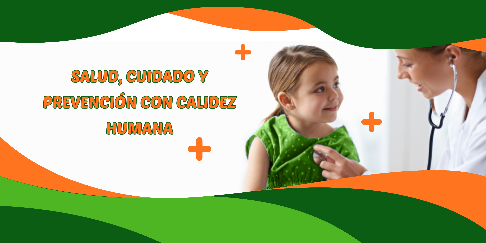

Nuestro Equipo de Profesionales
Preguntas Frecuentes
Sí, trabajamos con varias obras sociales y también atención particular. Consultá la cobertura de cada especialista en su perfil.
Podés solicitarlo a través de nuestra página de contacto o llamando a la recepción de Vita Kids.
No contamos con guardia permanente. Para emergencias, dirigite a la guardia pediátrica más cercana. Para consultas rápidas, podés pedir turnos disponibles en el día.